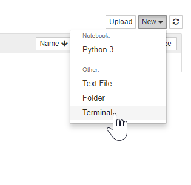

Adding data to the JupyterHub¶
This section covers how to add data to your JupyterHub either from the internet or from your own machine. To learn how to share data that is already on your JupyterHub, see Share data with your users.
Note
When you add data using the methods on this page, you will only add it to your user directory. This is not a place that is accessible to others. For information on sharing this data with users on the JupyterHub, see Share data with your users.
Adding data from your local machine¶
The easiest way to add data to your JupyterHub is to use the “Upload” user interface. To do so, follow these steps:
First, navigate to the Jupyter Notebook interface home page. You can do this by going to the URL
<my-hub-url>/user/<my-username>/tree.Click the “Upload” button to open the file chooser window.
Choose the file you wish to upload. You may select multiple files if you wish.
Click “Upload” for each file that you wish to upload.
Wait for the progress bar to finish for each file. These files will now be on your JupyterHub, your home user’s home directory.
To learn how to share this data with new users on the JupyterHub, see Share data with your users.
Downloading data from the command line¶
If the data of interest is on the internet, you may also use code in order
to download it to your JupyterHub. There are several ways of doing this, so
we’ll cover the simplest approach using the unix tool wget.
Log in to your JupyterHub and open a terminal window.
Use
wgetto download the file to your current directory in the terminal.wget <MY-FILE-URL>
Example: Downloading the gapminder dataset.¶
In this example we’ll download the gapminder dataset, which contains information about country GDP and live expectancy over time. You can download it from your browser at this link.
Log in to your JupyterHub and open a terminal window.
Use
wgetto download the gapminder dataset to your current directory in the terminal.wget https://swcarpentry.github.io/python-novice-gapminder/files/python-novice-gapminder-data.zip
This is a zip file, so we’ll need to download a unix tool called “unzip” in order to unzip it.
sudo -E apt-get install unzip
Finally, unzip the the file:
unzip python-novice-gapminder-data.zip
Confirm that your data was unzipped. It could be in a folder called
data/.
To learn how to share this data with new users on the JupyterHub, see Share data with your users.